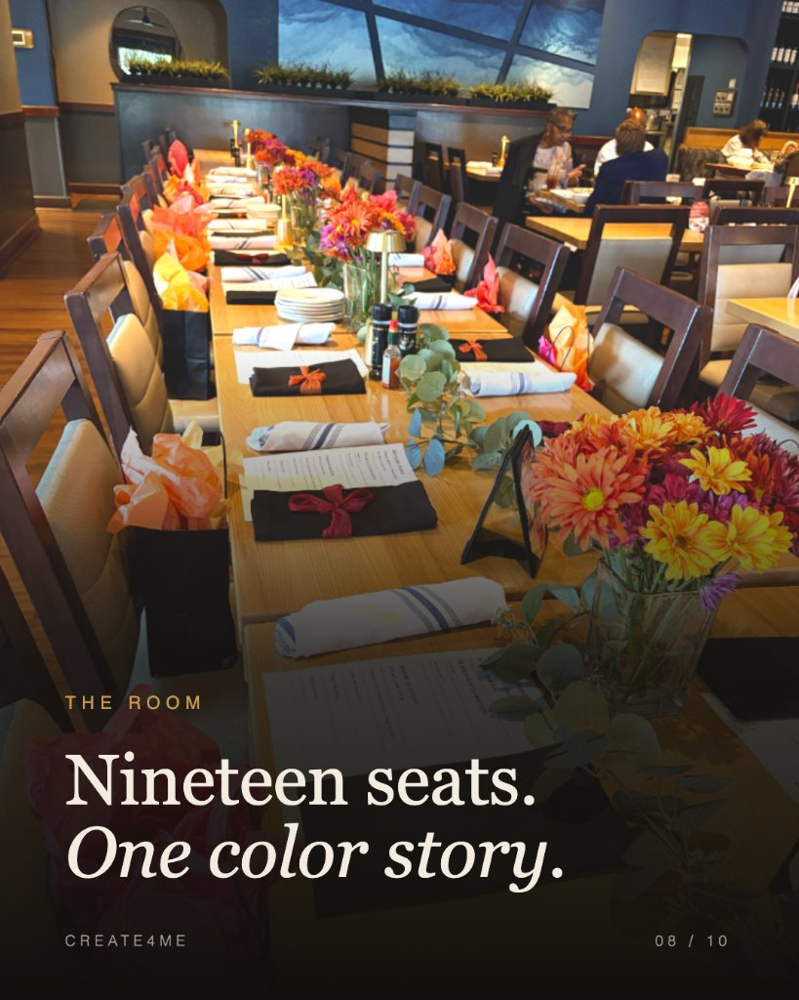
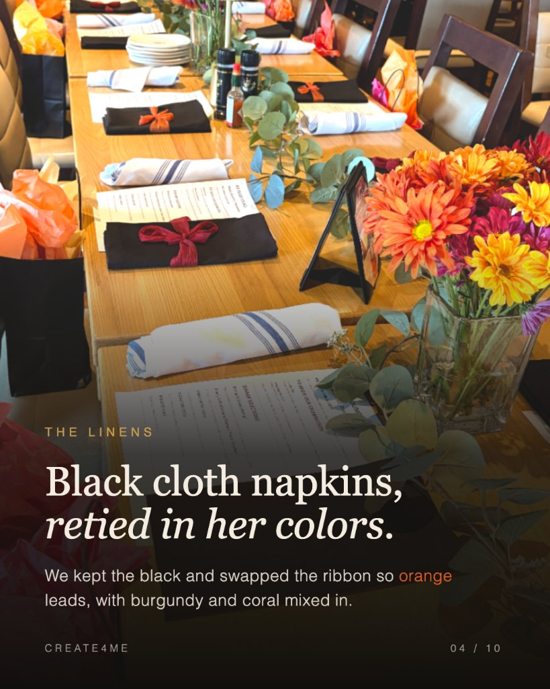
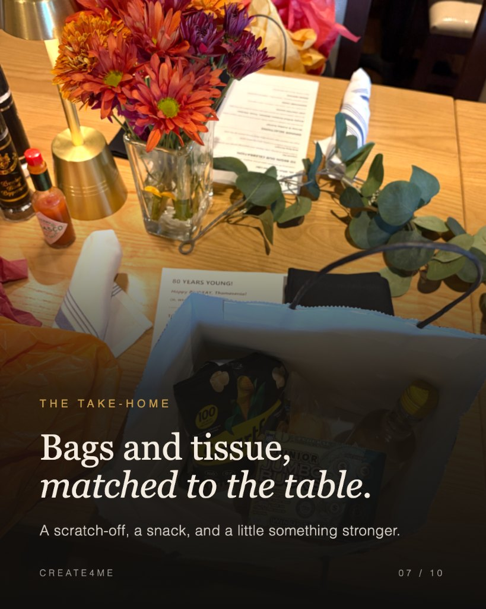

Eighty years young, one colour story.
Thomasenia turned 80 in a Columbia restaurant, with nineteen people around one long table. The brief was warmth on a real budget — the room already had the blue walls, the long table and the wooden chairs. Everything else was ours to place.


Nineteen seats. One colour story.
Nothing in the room was replaced. The chairs, the wood and the blue walls stayed; the design worked with them instead of against them, which is what keeps a personal commission affordable.

Mixed in what the florist actually had.
Budget-smart mums picked by colour rather than variety, and kept low enough that guests could talk across the table. Three vases and one brass lamp carried the whole centre run.

Black cloth napkins, retied in her colours.
The restaurant’s own black napkins were kept and the ribbon swapped, so orange leads with burgundy and coral mixed in. A small change that made the table look commissioned rather than borrowed.

Bags and tissue, matched to the table.
A scratch-off, a snack and a little something stronger — one bag per seat, tissue in the same oranges and pinks as the flowers so the favours read as part of the design.
Personal design, priced for one day.
A full-day commission like this sits in The Milestone — from $1,500, covering concept, sourcing, install and takedown. Smaller versions start at $350 for a single table.